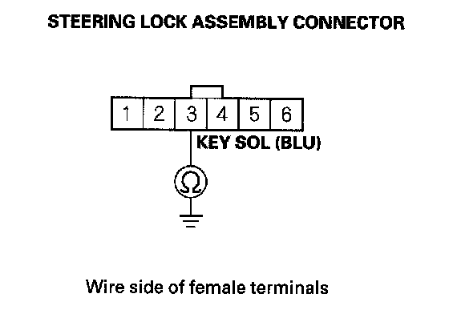
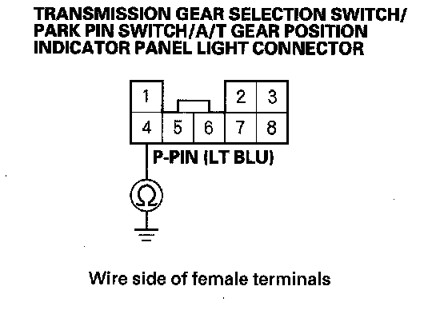
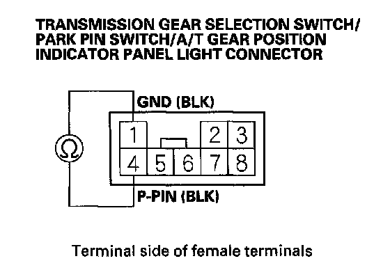
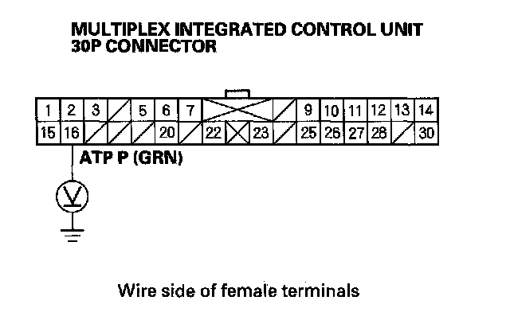

Key Interlock System Circuit Troubleshooting
Key Interlock System Circuit TroubleshootingSRS components are located in this area. Review the SRS component locations and the precautions and procedures before doing repair or service.
1. Turn the ignition switch to ACC (I). The shift lever must be in the P position.
2. Disconnect the steering lock assembly connector.
3. Check if the ignition switch can be turned to the LOCK (0) position.
Can the ignition switch be turned the LOCK (0) position?
YES - Go to step 4.
NO - Replace the ignition key cylinder/steering lock assembly.
4. Turn the ignition switch OFF.
5. Shift the shift lever into any position other than P.
6. Check for continuity between steering lock assembly connector terminal No. 3 and body ground.

Is there continuity?
YES - Repair a short in the wire between key interlock solenoid and the MICU.
NO - Go to step 7.
7. Remove driver's center console trim.
8. Disconnect transmission gear selection switch/park pin switch/A/T gear position indicator panel light connector.
9. Check for continuity between transmission gear selection switch/park pin switch/A/T gear position indicator panel light connector terminal No. 4 and body ground.

Is there continuity?
YES - Repair short in the wire between transmission gear selection switch/park pin switch/A/T gear position indicator panel light connector terminal No. 4 and the MICU.
NO - Go to step 10.
10. Shift the shift lever into the P position.
11. Check for continuity between transmission gear selection switch/park pin switch/A/T gear position indicator panel light connector terminals No. 1 and No. 4. Do not push the shift lever button.

Is there continuity?
YES - Replace the park pin switch and shift lever bracket base. The park pin switch, transmission gear selection switch, and A/T gear position indicator panel light harness are not available separately from the shift lever bracket base.
NO - Go to step 12.
12. Disconnect the multiplex integrated control unit 30P connector.
13. Turn the ignition switch ON (II).
14. Measure the voltage between multiplex integrated control unit 30P connector terminal No. 16 and body ground.

Is there battery voltage when the shift lever is in any position other than the P position, and no voltage when the shift lever is in the P position?
YES - Substitute a known-good multiplex integrated control unit (MICU) and recheck.
NO - Repair open or short in the wire between the MICU and the transmission range switch.